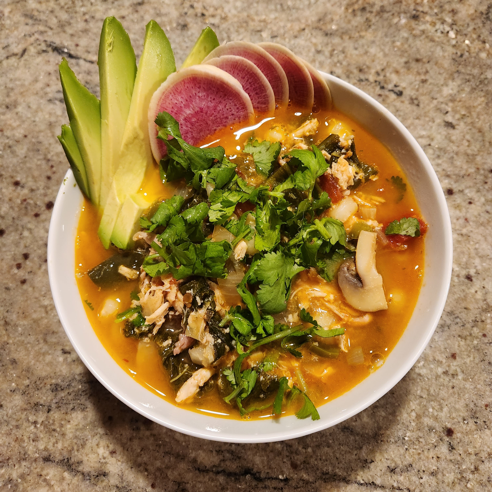

Posole

Description
Alex's healthy mexican Posole inspired soup, loaded with nutritious veggies and chicken. Serves 6.
Ingredients
- 3 tbsp canola oil
- Vegetable mix:
- 1 large yellow onion, chopped (about 3 cups)
- 2 poblano chiles, deseeded and chopped
- 2 cups chopped kale
- 1 large jalapeño, chopped with seeds
- 8 garlic cloves, rough chopped
- 10 small cremini mushrooms, quartered
- Spice mix:
- 1 tbsp ground cumin
- ¼ tsp ground cinnamon
- 1 tsp ground coriander
- 1 tsp dried oregano
- 1/4 tsp fresh ground black pepper
- 1 tbsp coarse salt
- 1 tbsp sugar
- 1 tbsp orange zest
- 1 chipotle chile (from a can of chipotle peppers in adobo sauce), chopped
- 1 tbsp adobo sauce (from chipotle-chile can)
- 1 28oz can white hominy, rinsed
- 1 14.5-oz can chopped tomatoes (with juice)
- 5 cups chicken stock
- Meat from one 3 ½-lb roasted chicken, chopped (about 4 cups)
- 1/2 cup chopped cilantro
- 6 chopped scallions
- 1/3 cup fresh lime juice
- Garnish:
- 6oz goats cheese, crumbled
- 1 avocado, sliced
- 6 small radishes, sliced thinly
- additional chopped cilantro
Steps
- Place canola oil in a six-quart stockpot over medium heat until warm. Add vegetable mix and cook until softened or onion begins to color, about 15 minutes, stirring occasionally. Add spice mix, chopped chipotle, and adobo sauce. Turn heat to high and stir for one minute or until aromatic.
- Add hominy, tomatoes, and chicken stock. Bring to boil, cover pot, and lower heat to simmer until flavors marry and soup is thickened, 30 minutes.
- Add chopped chicken, adjust heat to bring to boil, and then lower to simmer for 15 minutes.
- Stir in cilantro, scallions, and lime juice. Distribute into bowls and garnish with goat cheese, avocados, extra cilantro and radishes.
Return To Main Page